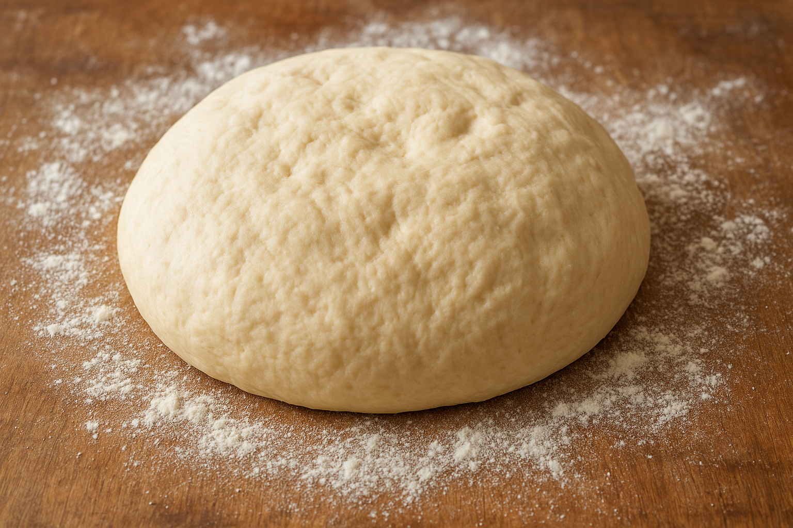

Easy Homemade Pizza Dough
Here's a quick and easy pizza dough recipe you can make at home:
Ingredients
- 2 1/4 tsp (1 packet) active dry yeast
- 1 1/2 cups warm water (110 F / 45 C - warm to the touch, not hot)
- 3 1/2 to 4 cups all-purpose flour (bread flour works too)
- 2 tbsp olive oil
- 2 tsp sugar (helps feed the yeast)
- 1 tsp salt
Instructions
- Activate Yeast: In a large bowl, mix warm water, sugar, and yeast. Let it sit for 5-10 minutes until foamy
- Make Dough: Add olive oil, salt, and 2 cups of flour. Stir until combined.
Gradually add the rest of the flour, mixing until the dough pulls away from the sides of the bowl.
- Knead: Transfer dough to a floured surface and knead for 6-8 minutes (until smooth and elastic).
Or knead with a stand mixer + dough hook for 5 minutes
- First Rise: Place dough in a lightly oiled bowl, cover with a damp cloth or plastic wrap,
and let rise for 1 hour (until double in size).
- Shape & Bake: Punch down dough, divide if making smaller pizzas. Roll out to your desired
thickness. Add sauce, cheese, and toppings. Bake at 475F (245C) for 12-15 minutes until
crust is golden and cheese is bubbly.